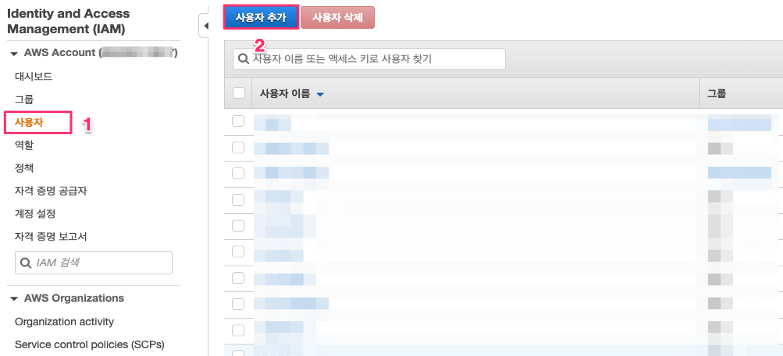
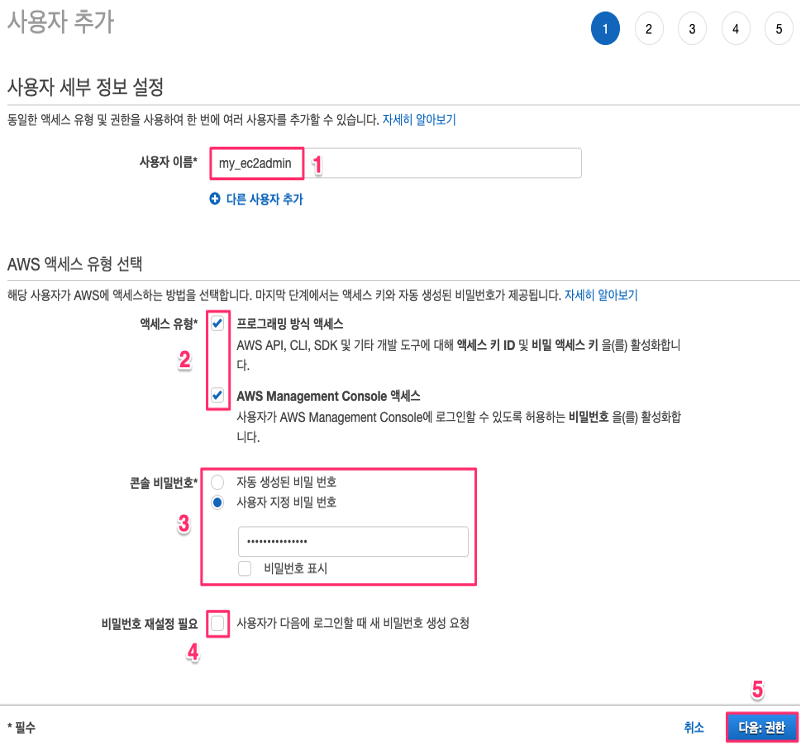
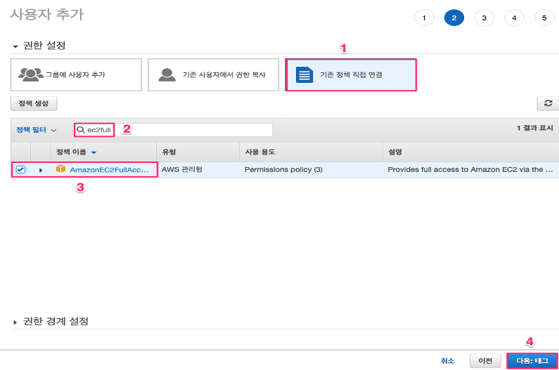
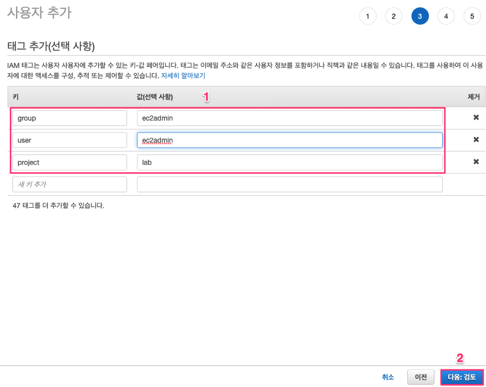
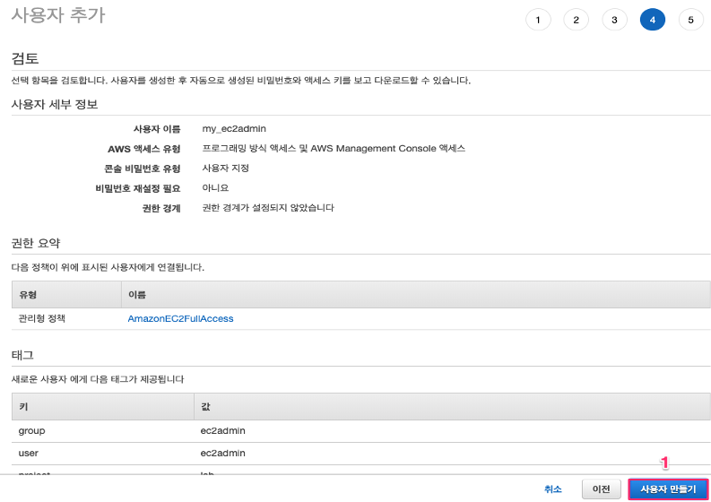
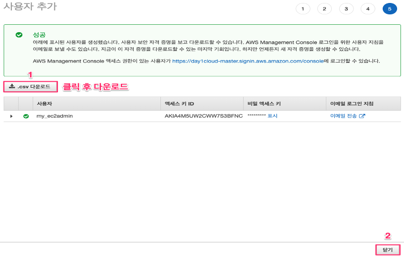
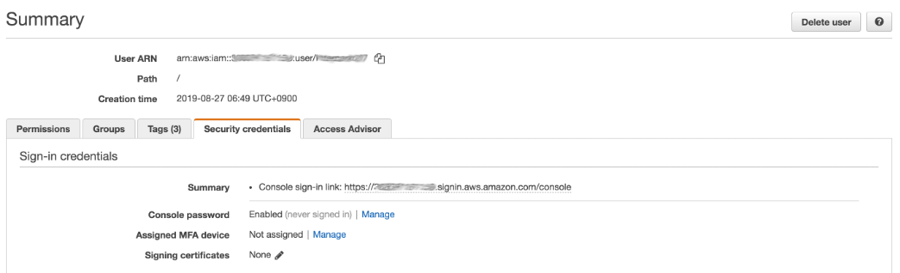

IAM EC2 관리자 생성
IAM 사용자 생성 – EC2 관리자 계정(Admin)
이 과정에서 생성하게 될 “ec2admin” IAM 사용자는 AWS 에서 제공하는 “AWS 관리형 정책”을 할당받게 되며 할당받는 AmazonEC2FullAccess 권한에 따라 EC2 인스턴스의 사용에 필요한 권한을 갖게 됩니다.
- “서비스”메뉴에서 “IAM”을 선택하거나 검색하여 IAM Management Console로 이동하십시오.
- “IAM 대시 보드”에서 “사용자”를 선택한 후, “사용자 추가”를 선택합니다.

- “사용자 이름”에 생성하고자 하는 IAM 사용자의 이름을 입력합니다. 사용자 이름은 Management Console 에 로그인하는 경우 아이디로도 사용되므로 식별 가능한 이름으로 생성하기를 권고드립니다. 사용자 이름을 “ec2admin”으로 지정합니다. “액세스 유형” 에서 “프로그래밍 방식 액세스” 와 “AWS Management Console 액세스” 의 체크박스를 클릭하여 해당 항목들이 선택되도록 합니다. “액세스 유형”은 생성되는 IAM 사용자가 사용 가능한 액세스 유형을 정의하는 것으로 GUI 기반인 AWS Management Console 과 프로그래밍 방식인 API, CLI, SDK 등 기타 액세스 키 ID 및 비밀 액세스 키의 활성화를 결정하게 됩니다. 다음으로 “콘솔 비밀번호”항목에서 “사용자 지정 비밀 번호” 에 해당하는 라디오 버튼을 선택한 후 사용하고자 하는 비밀번호를 입력합니다. 기본값으로 AWS 에 사용하는 비밀번호는 반드시 열개의 문자이상이고 영어 대문자와 특수문자를 반드시 포함하여야 합니다. 마지막으로 “비밀번호 재생성 필요”항목의 체크박스를 클릭하여 해제합니다. 이 항목이 체크되어 있는 경우 생성된 IAM 사용자는 최초 로그인 이후 반드시 비밀번호를 변경하여야 합니다. 이 Lab 에서는 편의상 최초 생성된 비밀번호를 변경하지 않고 사용하도록 하겠습니다. 모든 설정이 적용 되었으면 “다음: 권한” 버턴을 클릭합니다.

- 다음 화면의 메뉴 중 “권한 설정”에서 “기존 정책 직접 연결” 을 선택합니다. 그리고 “정책 필터”의 검색 창에 “ec2full” 을 입력한 후 검색된 정책들 중에서 “AmazonEC2FullAccess” 권한을 체크한 후 화면 하단의 “다음: 태그”를 클릭합니다.

- 실제 업무 환경에서는 업무 유형과 환경에 따라 태그를 보다 정교하게 설정하여 활용하는 것이 보안과 관리상 편리하지만 이 Lab 에서는 아래와 같이 “group:ec2admin”, “user:ec2admin”,”project:lab” 과 같이 3개의 태그를 입력하도록 하겠습니다. 태그를 입력한 후 화면 하단의 “다음: 검토”를 클릭합니다.

- 다음 화면에서 이전 과정에서 설정한 IAM 사용자의 설정사항들이 모두 맞는지 확인한 후 화면 하단의 “사용자 만들기”를 클릭합니다.

- “사용자 만들기”를 클릭하고 나면 아래와 같이 IAM 사용자가 생성된 것을 확인할 수 있습니다. 이 화면에서는 IAM 사용자가 사용할 수 있는 “액세스 키 ID 와 비밀 액세스 키” 정보를 제공합니다. “액세스 키 ID 와 비밀 액세스 키”를 다운로드하기 위해 화면 중간의 “.csv 다운로드” 버튼을 클릭한 후 “액세스 키 ID 와 비밀 액세스 키” 를 저장합니다. “액세스 키 ID 와 비밀 액세스 키”가 저장되었다면 “닫기”를 클릭합니다.

- IAM 사용자는 별도의 Login URL을 통하여 Console 접속이 가능합니다. Login URL을 확인하고 싶다면, 위에서 생성한 사용자를 클릭하고, 아래와 같이 Security credentials Tab 화면을 확인하여야 합니다.
